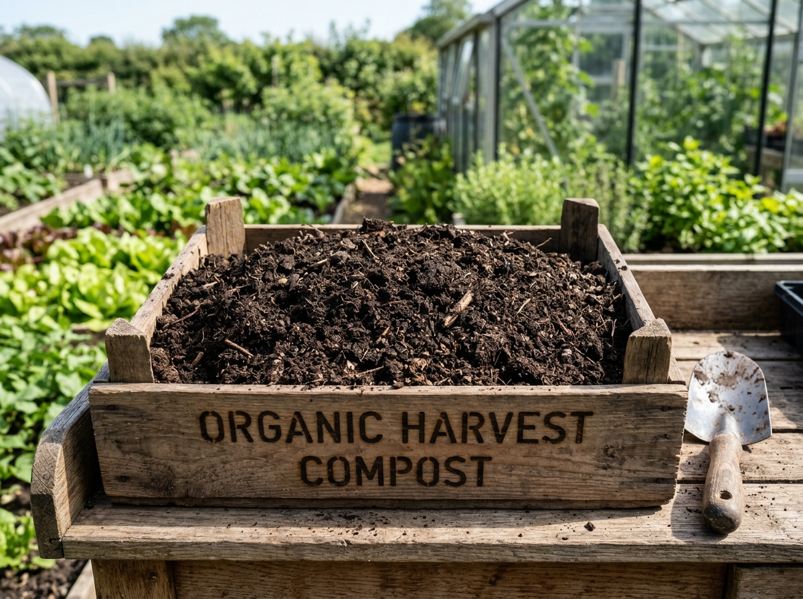
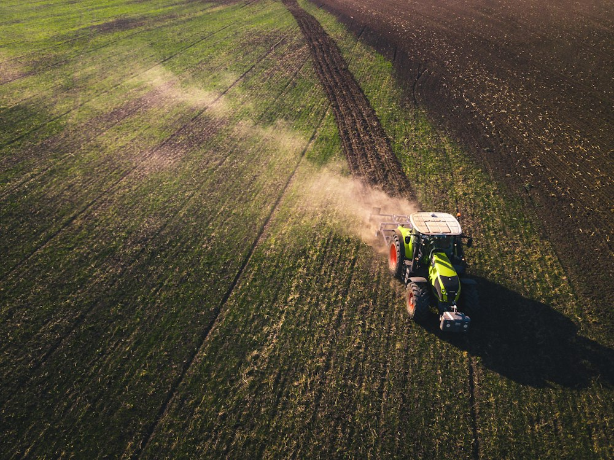

Select Formulations Tailored to Your Crops
Filter our certified organic products according to your cultivated crop requirements, or explore our full product range below.

Enriched Vermicompost
Biologically digested organic matter created by *Eisenia fetida*. Rich in live beneficial microbes, humic acid, and plant growth auxins.
Key Benefits:
- • Speeds up seed germination and lateral root branching.
- • Supplies slowly available macro and trace micronutrients.
- • Enhances water holding capacity by 40%.

180-Day Cow Dung Manure
Naturally fermented for 180+ days through mechanical windrows. Odor-free, dark humus consistency, restoring soil biological fertility.
Key Benefits:
- • Deeply conditions hard, compacted clay and sandy soils.
- • Repopulates native beneficial soil microflora.
- • Perfect basal bulk input before pre-monsoon planting.

Pure Neem Cake Fertilizer
100% pure cold-pressed expeller cake from neem seeds. Combines high organic nitrogen nutrition with subterranean pest control.
Key Benefits:
- • Suppresses root-knot nematodes, termites, and grubs.
- • Prevents nitrification and nitrogen evaporation loss.
- • Enhances crop chlorophyll synthesis and leaf greenness.

Aerobic Compost Manure
Engineered from diverse crop biomass, sugar press mud, and microbial inoculants. Rebuilds soil organic carbon and aggregates.
Key Benefits:
- • Buffers soil pH against alkaline salt and acidic drift.
- • Maximizes cation exchange capacity (CEC) for nutrient retention.
- • Enhances drought tolerance across dryland crops.

High-N Poultry Manure
Thermally sterilized and aged poultry litter. Delivers high concentrations of organic nitrogen, phosphorus, and essential calcium.
Key Benefits:
- • Fast-acting organic vegetative stimulant for heavy feeders.
- • Abundant calcium prevents blossom end rot in tomatoes & chilies.
- • Heat-treated to eliminate Salmonella, E. coli, and flies.

Organic Bone Meal
Finely milled, high-pressure steamed bone powder. The world's finest organic source of slow-release phosphorus and calcium.
Key Benefits:
- • Stimulates profuse root establishment and floral bloom.
- • Prevents flower and premature fruit drop.
- • Strengthens plant cellular walls against drought stress.

Bio Organic Potash
Derived from fermented plant extracts and botanical vinasse. Boosts fruit weight, brix sugar content, and seasonal drought tolerance.
Key Benefits:
- • Increases fruit sweetness, uniform color, and bunch weight.
- • Regulates stomatal water loss during dry summer heat.
- • Fully chlorine-free—prevents leaf tip burn in sensitive crops.

Pure Castor Cake Manure
100% cold-pressed Ricinus seed meal providing sustained organic nitrogen, improving soil friability, and deterring subterranean pests.
Key Benefits:
- • Provides steady slow-release nitrogen throughout vegetative tillering and shoot expansion.
- • Natural ricin alkaloids repel subterranean termites, white grubs, and nematodes.
- • Substantially boosts earthworm feeding and improves crumb soil structure in heavy clays.

Activated Biochar Compost
Ultra-porous pyrolyzed biomass co-composted with aged manure and humic inoculants for permanent soil carbon and extraordinary moisture retention.
Key Benefits:
- • Permanently expands soil cation exchange capacity (CEC), locking minerals in the root zone.
- • Internal porous micro-cavities store up to 400% water, offering exceptional drought resilience.
- • Pre-inoculated with beneficial aerobic fungi and bacteria for immediate root colonization.